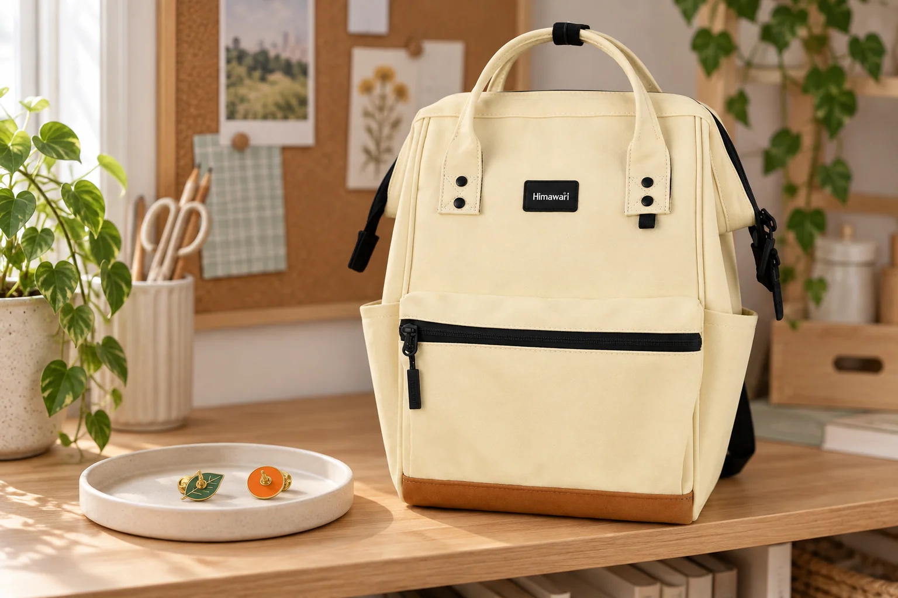

배지 그림을 고른 다음에는 뒷면을 본다

백팩 앞면에 배지를 대보면 색과 위치부터 보게 됩니다. 마음에 드는 그림을 어디에 놓을지 정한 뒤에는 배지 뒷면과 가방 안쪽을 함께 살펴볼 시간이 필요합니다. 핀을 원단에 통과시키는 장식이라면 떼어낸 뒤에도 흔적이 남을 수 있고, 뒷면 고정 장치가 안쪽 물건과 만날 수 있습니다. 장식의 앞면을 고르는 선택에 부착 방식과 관리까지 포함해 봅니다.
고정 장치를 분리한 자리에서
배지를 손에 들고 핀과 고정 부품의 짝을 확인합니다. 자기 배지의 사용 안내에 맞춰 여닫고, 뾰족한 끝을 덮는 부품이 제대로 맞는지 살펴봅니다. 부품이 없거나 닫히는 상태가 불분명하다면 그 상태로 가방에 달지 않습니다. 쓰지 않을 배지는 원래 고정 장치를 채워 정한 보관 위치에 둡니다. 앞면 그림이 같은 배지라도 뒷면 방식이 다를 수 있으므로 각 부품을 보고 다룹니다.
책상 위에서 부품을 나누어 보면 작게 떨어지는 고정 장치도 찾기 쉽습니다. 여러 배지를 동시에 열어놓기보다 하나씩 상태를 확인하고 정리합니다. 고정 장치가 비슷해 보인다고 임의로 서로 바꾸기보다 각 배지의 구성을 맞춥니다. 손에 잡는 위치 밖으로 핀 끝이 나오지 않는지도 살펴봅니다. 그림을 대보는 작업과 실제로 핀을 여는 작업을 각각 마치면 작은 부품의 위치가 분명해집니다.
핀 뒤쪽에 놓일 손과 물건
부착을 생각하는 겉면의 뒤쪽이 어디로 이어지는지 가방을 열어 봅니다. 같은 앞면에서도 안감이나 수납칸이 겹칠 수 있습니다. 핀이 여러 층을 통과하면 뒤쪽 고정 장치가 무엇에 닿는지 확인하기 어려울 수 있으므로 그 위치부터 봅니다. 자주 손을 넣는 자리인지, 종이나 소품이 지나가는 자리인지도 살펴봅니다. 그림의 높이만으로 위치를 결정하기보다 실제 사용하는 동작과 함께 고릅니다.
지퍼의 이동 길이나 손잡이 연결부, 어깨끈처럼 움직임과 힘이 모이는 부분을 장식 자리로 삼기 전에 제품 구조와 안내를 확인합니다. 가방 겉면의 평평한 공간처럼 보여도 부착을 위한 보강이 있다고 판단할 수는 없습니다. 원래 배지를 달도록 만든 소품이 있다면 그 구성을 사용하는 선택도 있습니다. 임의로 구멍을 늘려 위치를 고치는 대신 핀을 통과시키기 전까지 여러 배치를 비교해 볼 수 있습니다.
가방을 든 상태에서 보이는 위치와 내려놓은 상태에서 닿는 위치도 생각합니다. 앞면 아래쪽은 놓는 자리와 만날 수 있고, 손이 자주 가는 부분은 장식과 반복해서 닿을 수 있습니다. 실제 사용하는 책상과 보관 위치에서 배지가 무엇과 만날지 살펴보면 자기 생활에 맞는 판단을 할 수 있습니다. 다른 사람의 사진에서 좋아 보인 위치를 그대로 옮기기보다 현재 가방의 사용 흐름에 맞춰 정하는 것입니다.
Himawari No.124S 옐로우와 함께 소개하는 배지는 앞면의 분위기를 비교하는 별도 소품입니다. 가방에 핀을 통과시킬지 결정하기 전에는 색의 조합을 보면서 부착 방식도 같이 생각합니다. 원단 상태를 유지하고 싶다면 배지를 별도 보관판이나 배지 부착용 소품에 두는 방법을 고를 수 있습니다. 그림을 좋아한다는 선택과 가방을 찌른다는 선택을 각각 결정할 수 있습니다.

떼어낸 뒤 남을 흔적도 선택에 넣는다
핀을 뺐을 때 원래 상태로 돌아온다고 기대하기 전에 구멍이나 흔적을 받아들일지 생각합니다. 새 가방의 겉면을 유지하고 싶은지, 장식을 자주 바꿀 계획인지에 따라 결정이 달라집니다. 부착을 하지 않기로 정했다면 장식 위치를 못 찾은 실패로 볼 필요는 없습니다. 배지를 전용 소품에서 감상하거나 여러 배지를 모아 따로 두는 방식도 자신이 그림을 즐기는 방법이 될 수 있습니다.
접착제나 테이프로 고정 장치를 대신하면 흔적이 남지 않을 것이라고 단정하지 않습니다. 접착 방식도 원단과 제품 안내에 맞는지 별도로 확인해야 합니다. 핀 부착이 마음에 들지 않는다는 이유로 다른 부착 방식을 즉석에서 더하기보다, 실제로 어떤 형태를 원하는지 정합니다. 이동하는 가방에 장식을 두고 싶은지, 그림을 가까운 곳에 보관하고 싶은지 구분하면 고를 소품도 달라집니다.
이미 배지를 달았다면 가방을 비우는 날에 뒷면도 확인합니다. 겉면의 그림만 보지 않고 고정 장치가 제자리에 있는지, 안쪽 소지품이 닿는 위치가 달라지지 않았는지 봅니다. 쓰는 물건이 바뀌었다면 전에 비어 있던 공간을 다른 소품이 지나갈 수 있습니다. 핀을 옮겨 다시 부착하려면 새 흔적이 늘어난다는 점을 포함해 결정합니다. 현재 위치가 적절한지부터 보는 편이 좋습니다.
가방을 관리하거나 장기간 보관할 때에는 배지와 가방의 안내를 각각 봅니다. 분리한다면 핀과 고정 장치를 함께 정리하고, 작은 부품이 가방 안에 떨어져 남지 않았는지 확인합니다. 장식이 달린 상태를 전제로 관리 방법을 바꾸기보다 제품마다 필요한 조건을 살펴봅니다. 분리한 배지의 보관 자리도 정해두면 다음에 부품을 다시 찾는 시간을 줄일 수 있습니다.
배지를 몇 개 함께 사용할 계획이라면 먼저 그림들의 관계와 실제 부착 자리를 종이나 별도 판에서 비교할 수 있습니다. 실제 가방에 여러 번 찔러 배치를 시험하지 않아도 앞면의 구성을 살펴볼 수 있습니다. 마음에 드는 배치가 생기면 그 위치의 뒤쪽과 고정 방식부터 다시 봅니다. 그림과 원단, 안쪽 소지품까지 함께 고려한 뒤 부착 여부를 정하면 장식의 관리도 처음 선택에 포함됩니다.